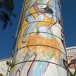

Casa de Cultura Grajaú
A casa de cultura Grajaú apresenta várias atividades culturais, como por exemplo aulas de dança de Samba Rock, Axé e Hip Hop.
Além de várias apresentações artísticas.
A casa de cultura Grajaú apresenta várias atividades culturais, como por exemplo aulas de dança de Samba Rock, Axé e Hip Hop.
Além de várias apresentações artísticas.
O Circo Escola é um projeto para o desenvolvimento de atividades em contraturno escolar para crianças e adolescentes, tendo por foco o incremento da arte circense, na ampliação da sociabilidade e prevenção de situações de risco pessoal e social. Preocupa-se com a formação integral das crianças e adolescentes, trabalhando a criatividade, o lúdico, a arte educação, a cidadania. Deve, ainda, desenvolver ações socioeducativas com as famílias.
O Pagode da 27 é um grupo que nasceu de uma roda homônima, realizada aos domingos, na Rua Manoel Guilherme dos Reis, mais conhecida como Rua 27, no Grajaú, na Zona Sul de São Paulo. Para Ricardo Rabelo, diretor musical do conjunto, a roda, surgida em 2005, é um marco na história do bairro, que já foi tido como um dos mais violentos da capital paulista. Rabelo, que também toca banjo no grupo e é cavaquinista da banda do rapper Criolo, diz na entrevista à Batuta que o samba levantou a autoestima dos moradores e estimulou outras iniciativas. Parte importante dessa conquista vem do fato de quase todo o repertório ser dos próprios integrantes do Pagode da 27.
Como chegar| Ouçam o que dizem sobre.| Pagode da 27 na Tv